About Me
A short introduction.
Hello! My name is Eloy De Cort. I'm a Game Developer originating from Belgium.
I'm currently studying at
Howest - Digital Arts and Entertainment.
Starting at young age I had a passion for programming.
All by all, I want to create an experience through games with interesting and fun gameplay mechanics.
Thats what I think being a Gameplay Programmer is all about.
Profile
I'm a very open person. Eager to learn new things and not shy to self-improvement. I hope to not only work on games that can motivate and bring forth emotions in others, but also pushes myself continuously.
- Full Name: Eloy De Cort
- Birth Date: February 29, 2000
- Current Job: Digital Arts And Entertainment Student
- Languages: English / Dutch
- Website: www.eloydecort.com
- Email: eloy.decort@gmail.com
Skills
Studying at Digital Arts And Entertainment has florished a multitude of skills. This, in combination with prior experiences and self-studied skills, create my palette of interest.
Main Competences:
- C++
- C#
- Unreal Engine
- Unity
Sub Competences
(basic knowledge):
- 3DSMax
- HTML/CSS
- Javascript
Audio Competences:
- Studio One
- FL Studio
Resume
Resume
I'm currently still studying at Digital Arts And Entertainment. Other than my education I have no industry experience yet. I'm actively searching for an internship place to gain my first experience in the Game Development Industry.
Work Experience
Looking for internship...
Education
Technical Artist
Bachelor Degree
September 2018 - Present
Digital Arts And Entertainment
During my time at Digital Arts And Entertainment, I've learned more about the different fields in the Gaming Industry. This gave me a thorough understanding in the workflow of not only the programming side of games, but also the artist side.
Portfolio
Game Development Works
Below you can find a multitude of selected works that I'm proud to showcase. Hovering and clicking on these images will give a broader view and more details on the work.
 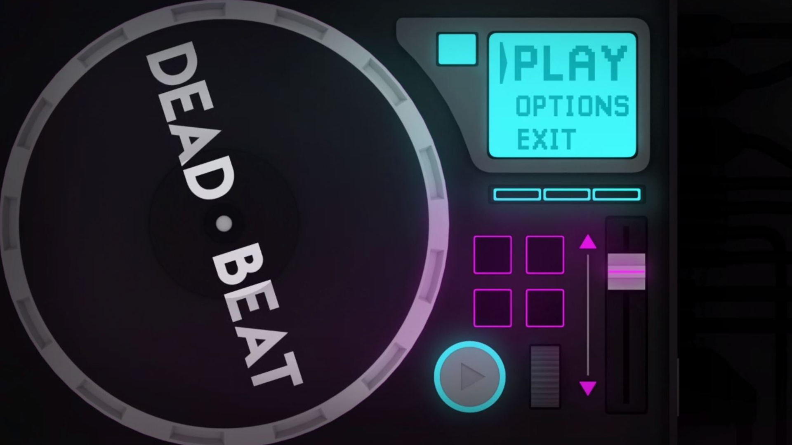
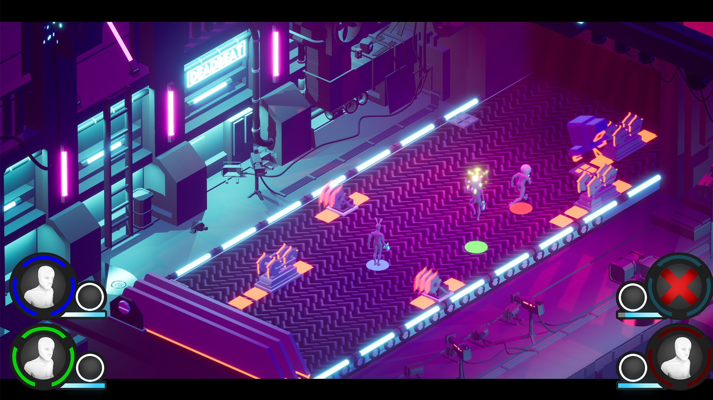
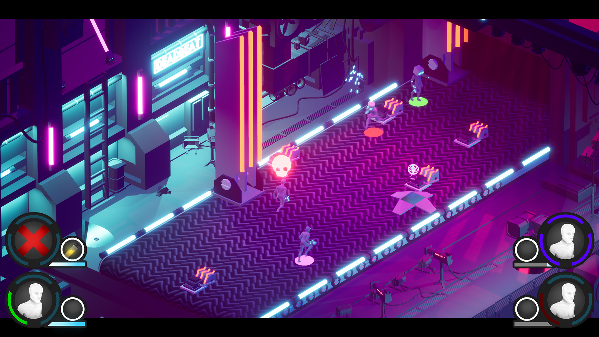
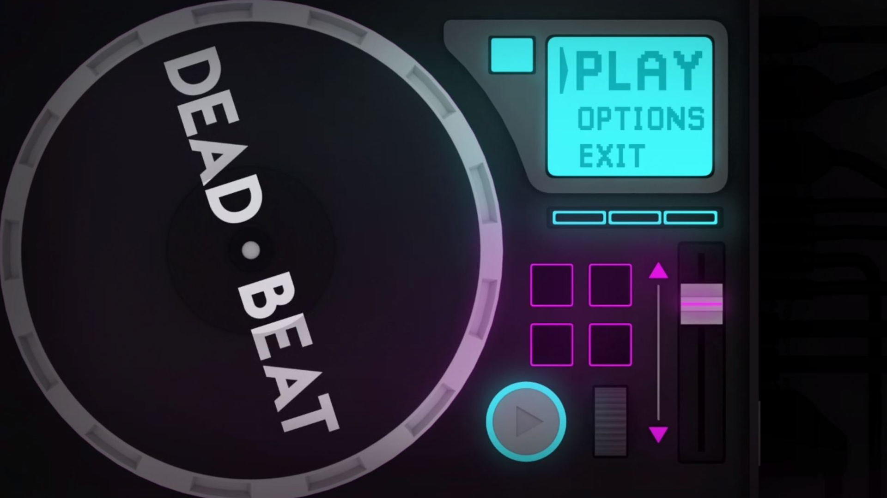
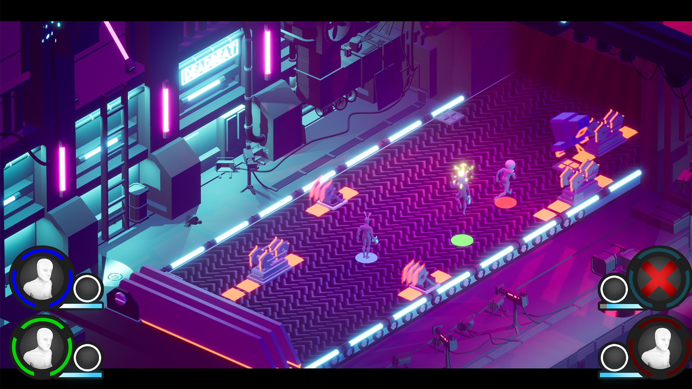
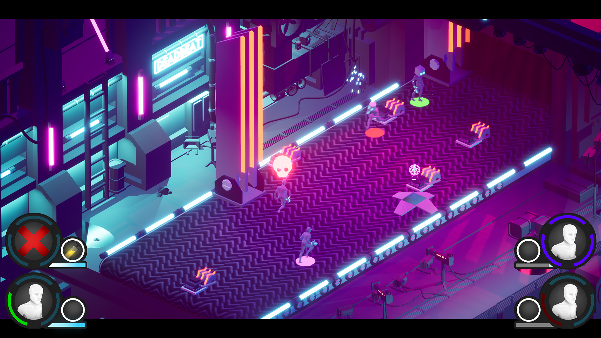
DEADBEAT
DEADBEAT was a group project made on Digital Arts And Entertainment.
I was responsible for following topics:
BPM Handling (on-beat object reactivity, ...)
Grid System & Trap spawning
Trap Behaviour
CODE SAMPLES
Grid Generation
To generate a grid, I keep 2 maps. In the beginning these are identical, but as more grid spaces are filled we remove grid spaces from the OpenCellMap. Each cell has a spawnpoint which is used to spawn the traps on that specific location.
void AGrid::GenerateGrid()
{
//Generate indices in X and Y position on the grid
//Clean-Up arrays
m_CellMap.Empty();
m_OpenCellMap.Empty();
//Fill Array with cells, each cell will have a 2D index as well.
for(int x{}; x < m_Columns; ++x)
{
for(int y{}; y < m_Rows; ++y)
{
FCell cell{};
cell.spawnPoint = GetWorldPosFromIndex(FVector2D{float(x),float(y)});
m_CellMap.Add(FVector2D{float(x),float(y)}, cell);
}
}
m_OpenCellMap = m_CellMap;
m_pCollisionBox->SetBoxExtent(FVector{(m_TileSize*m_Rows)/2.f,(m_TileSize*m_Columns)/2.f, 20.f});
m_pCollisionBox->SetRelativeLocation(FVector{0.f,0.f,10.f});
}
BPM Handling
The following code was used to maken an accurate tick system that ensures no FPS dependancy thus resulting in accurate timing measurement.
The BPM can easily be changed in UE4. The crochet is calculated with
//___INIT___
//Keeping the current time.
m_AudioStartTime = UGameplayStatics::GetAudioTimeSeconds(this->GetWorld());
//Setting the crotchet (Quarter Note)
m_Crotchet = 60/m_Bpm;
//___UPDATE___
if(m_IsMusicPlaying)
{
//Check position of song
m_SongPos = float((UGameplayStatics::GetAudioTimeSeconds(this->GetWorld()) - m_AudioStartTime));
//If the position of the song is bigger than whatever the lastbeat amount was + a quarter note, we can assume there's a beat.
//This ensures us that there is no usage of frame dependancy --> No/Minimal latency.
if(m_SongPos > m_LastBeat + m_Crotchet)
{
//Adding a quarter note to the lastbeat value to keep track of beats
m_LastBeat += m_Crotchet;
}
}
In-Rhythm Check
Following code does an easy check to see if the current time is on the rhythm. This is done by adding & substracting the value of a crotchet (Quarter note).
bool ABeatHandler::CheckInRhythm()
{
//Check the current input time
m_InputTime = float((UGameplayStatics::GetAudioTimeSeconds(this->GetWorld()) - m_AudioStartTime));
//Check if within a certain offset from the beat -> ----[-----!BEAT!-----]----
if(m_InputTime > (m_LastBeat + m_Crotchet) - m_InputOffset && m_InputTime < (m_LastBeat + m_Crotchet) + m_InputOffset )
{
return true;
}
return false;
}
 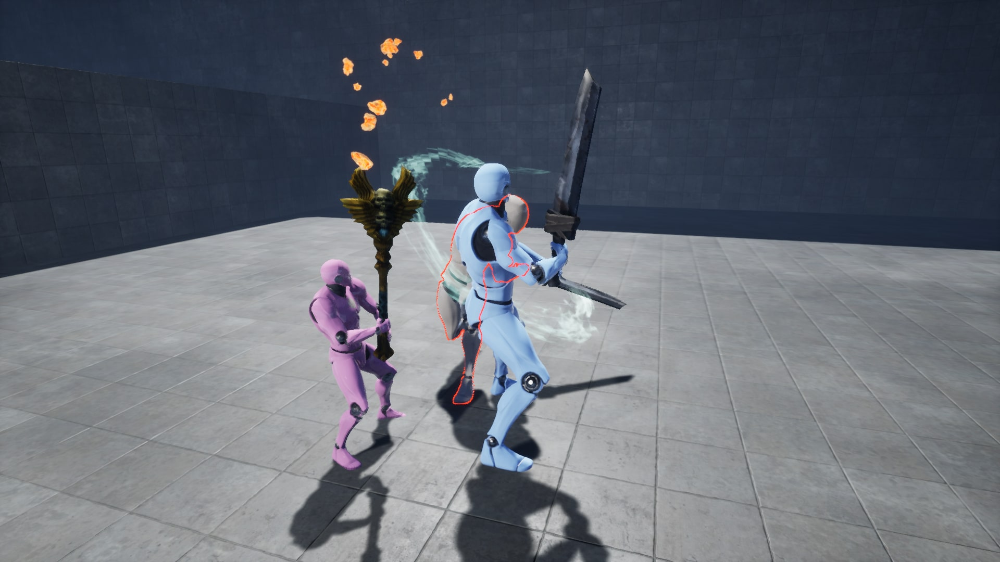
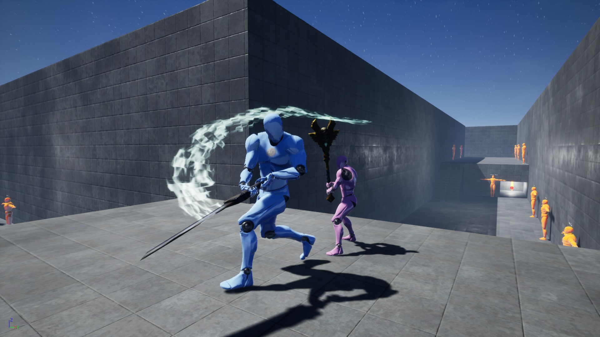
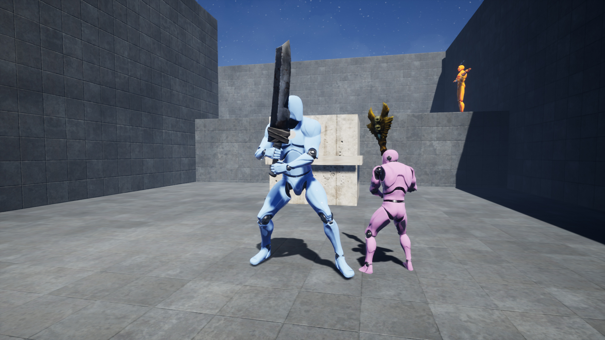
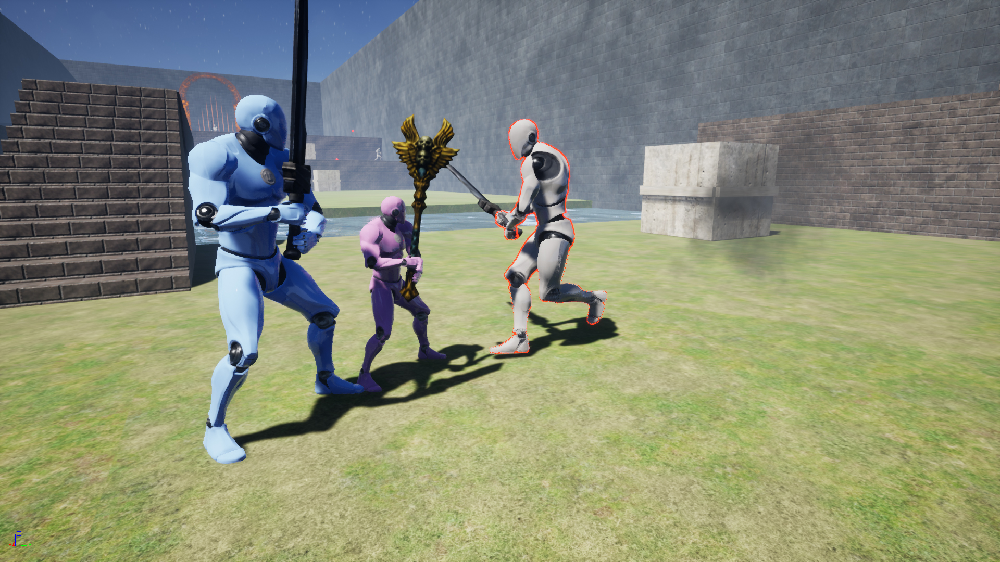
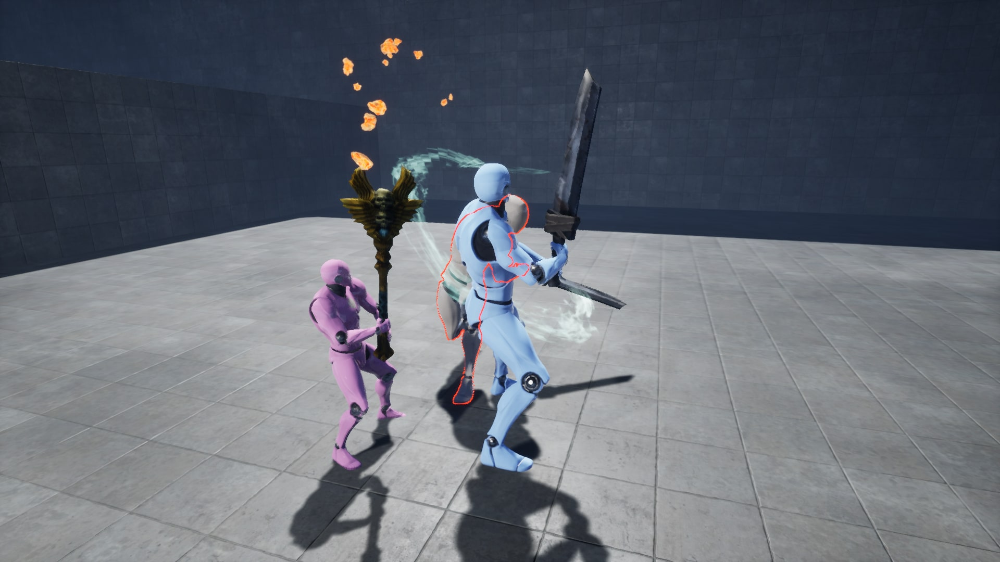
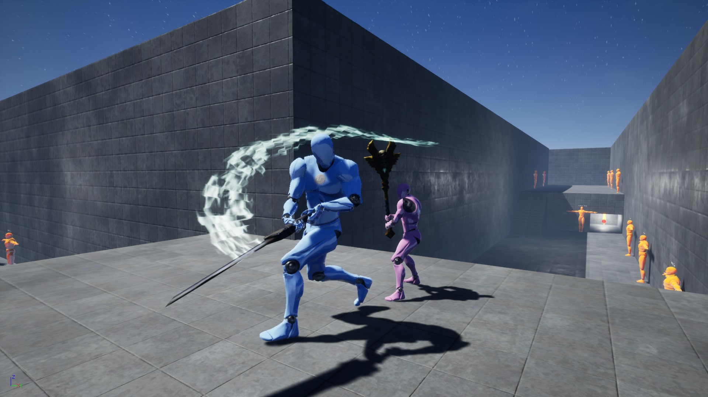
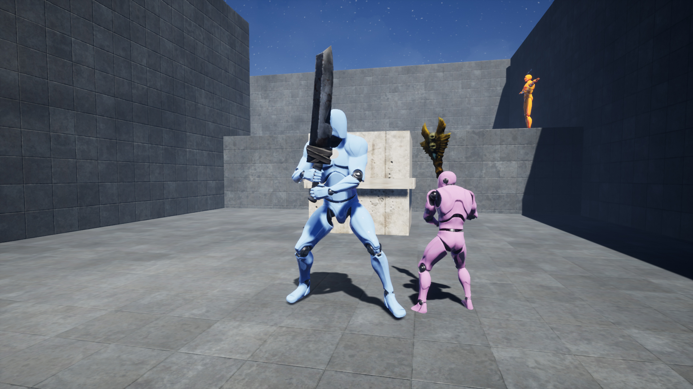
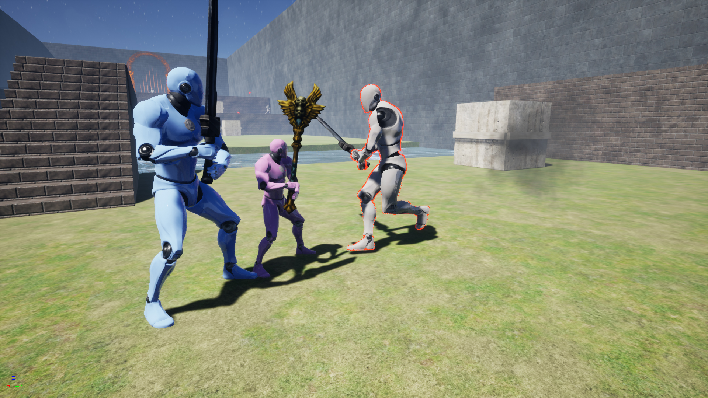
 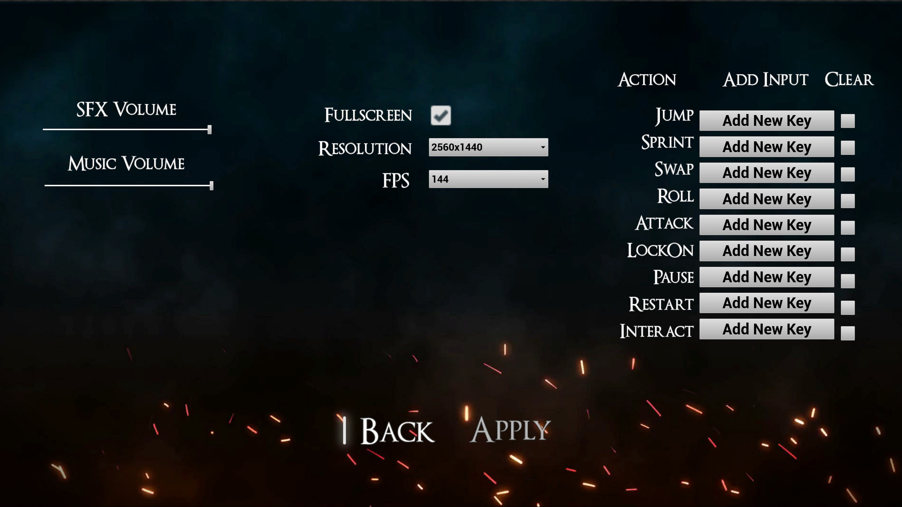
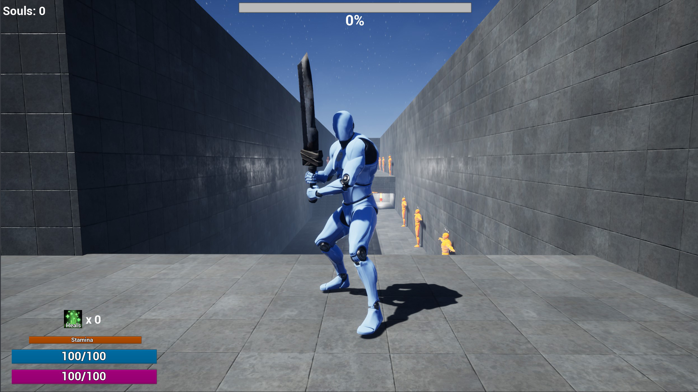
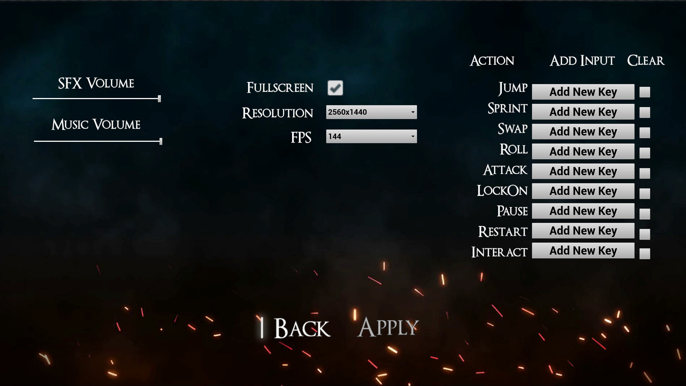
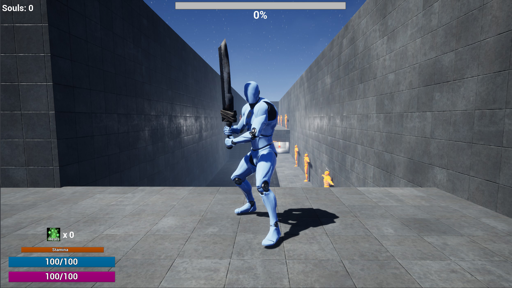

Soul Reliant
Soul Reliant is a souls-like (Action Adventure) prototype project based on 2 keywords: Population & Depend. You can swap between 2 characters, which both have their unique "abilities".
The combat was based on souls-like combat: with rolls and sword-combos.
The bigger character must help the smaller character to climb on high walls, the smaller character can go under things the bigger can't.
The goal is to defeat all enemies in a certain area, then proceed to the next area.
Controller Compatible.
Contact
The easiest way to reach out to me!
Filling in this form is an easy and quick way to get a message directly to me! I'm happy to answer any questions, requests or anything else as long as it's within my realm of possibilities.
Current Country Of Residence
Belgium
Email Me At
eloy.decort@gmail.com